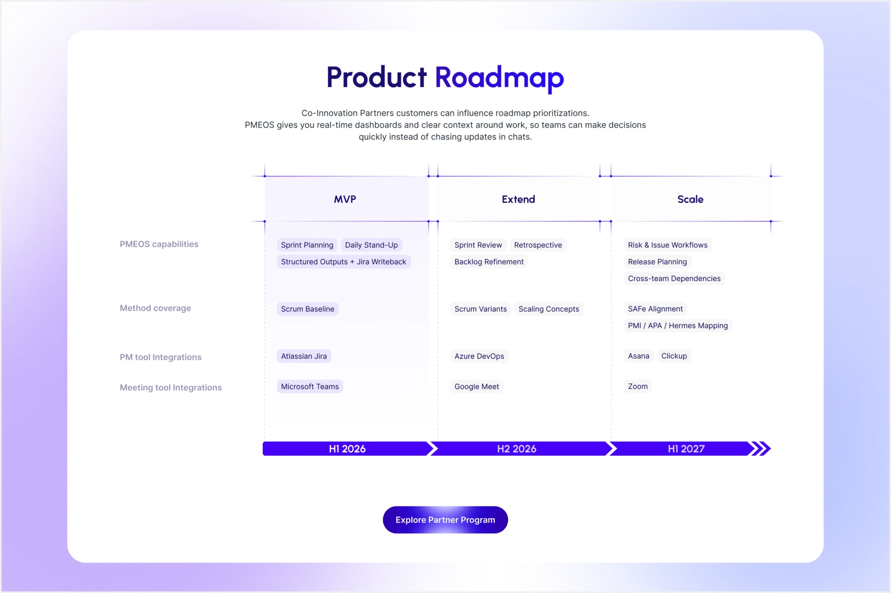

2026
AKC
- Real Estate
- Web Platform
- AI-assisted Development

An AI orchestration platform for managing and delivering complex projects.
My work covered the complete website UI, from the initial concept through to delivery. A cohesive visual system connected the typography, colour palette, and reusable components, while collaboration with marketing and development supported the handoff.

Consistent typography, reusable components, and a considered colour palette formed the foundation of the website. The work connected hero-section exploration with a cohesive interface across the site.